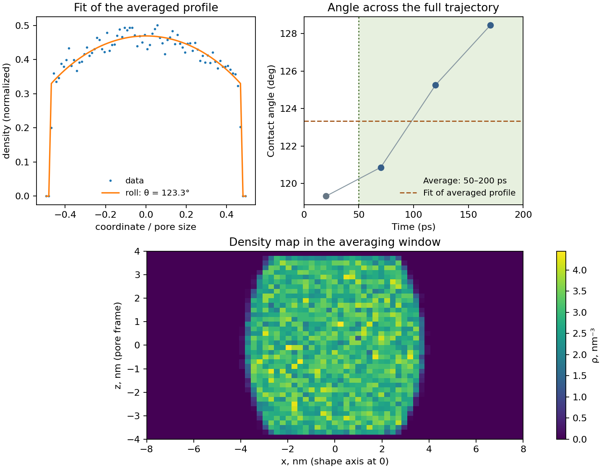
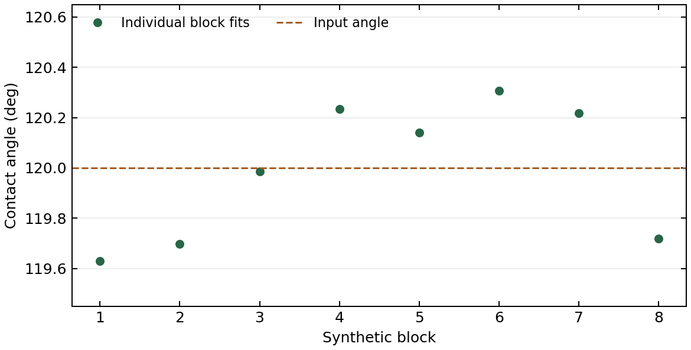

Documentation / User guide / From a trajectory
From a trajectory
Read a GROMACS or LAMMPS trajectory, inspect the contact angle across the full run, and fit a selected averaging window.
Download and run the examples
Extract md-trajectory-examples.zip and install PANDA with the md and plot extras. Run these commands from the extracted directory. Both examples read the same synthetic particle frames written in two engine formats, with an input angle of 120°. The files are designed for testing the analysis workflow.
python md_gromacs.py
python md_lammps.pyEach script writes an NPZ with the full-run block profiles, an NPZ with the averaged profile, and a PNG with three diagnostic panels.
GROMACS
The example reads slit.gro and slit.xtc. For a simulation, use a matching .tpr or .gro with your trajectory, and substitute the residue and atom names from that topology. The XTC stores frame times. If counting water oxygens, use the bulk oxygen number density in nm⁻³.
from panda_md import load_trajectory
from md_workflow import analyze
traj = load_trajectory("slit.gro", "slit.xtc")
analyze(
traj,
walls="resname WALL",
liquid="resname LIQ and name O",
rho_bulk=3.0,
average_from="50 ps",
average_to="200 ps",
block="50 ps",
prefix="gromacs",
)Pore width = 8.000 nm
Trajectory = 0 to 200 ps
Averaging window = 50 to 200 ps
Blocks plotted = 4
Full blocks inside averaging window = 3
Mean-profile theta = 123.33 deg
Block SD inside window = 3.81 deg
Fit flags = ()GROMACS file formats · MDAnalysis input and topology options
LAMMPS
The example pairs an atom_style atomic DATA file with a custom dump. Type 1 is the wall and type 2 is the selected liquid. For your run, substitute its atom types and set atom_style to the columns in the DATA file’s Atoms section. The dump and DATA file must have matching atom IDs.
from panda_md import load_trajectory
from md_workflow import analyze
traj = load_trajectory(
"slit.data", "slit.lammpstrj",
atom_style="id type x y z",
dt=0.002, # ps per integration step; dump interval is 5000 steps
)
analyze(
traj,
walls="type 1",
liquid="type 2",
rho_bulk=3.0,
average_from="50 ps",
average_to="200 ps",
block="50 ps",
prefix="lammps",
)Pore width = 8.000 nm
Trajectory = 0 to 200 ps
Averaging window = 50 to 200 ps
Blocks plotted = 4
Full blocks inside averaging window = 3
Mean-profile theta = 123.33 deg
Block SD inside window = 3.81 deg
Fit flags = ()For a compatible LAMMPS input, write the topology and dump coordinates as follows. Use the integration timestep in ps per step for Python’s dt. Here, 5000 steps × 0.002 ps gives 10 ps between saved frames. With units real, convert the input timestep from fs to ps. With units lj, convert reduced distances and times consistently before using physical nm and ps labels. PANDA's MDAnalysis reader converts input Å to nm.
write_data slit.data
dump trajectory all custom 5000 slit.lammpstrj id type x y z
dump_modify trajectory sort idFull trajectory and averaging window
The block-angle panel spans the full 0–200 ps trajectory. The gray point lies before the averaging window. The green shading and dotted line mark 50–200 ps and the start of averaging. The horizontal dashed line gives the angle fitted to the mean density profile over that window. The density map uses the same frames as the mean profile.
Block points mark the midpoints of the sampled frames in each complete 50 ps block. PANDA drops an incomplete final block. The reported standard deviation uses only complete plotted blocks whose sampled frames lie inside the averaging window. For production data, choose the averaging start after inspecting equilibration and set the block length with temporal correlation in mind.


Show the shared Python workflow
"""Analyze a slit-pore roll from a GROMACS or LAMMPS trajectory."""
from pathlib import Path
import matplotlib.pyplot as plt
import numpy as np
from panda_md import SlitPore, density_map, density_profile, fit_blocks
from panda_md.core.timing import to_picoseconds
from panda_md.plotting import plot_density_map, plot_fit
def analyze(traj, *, walls, liquid, rho_bulk, average_from, average_to, block, prefix):
prefix = Path(prefix)
times = traj.times_ps()
first_ps, last_ps = float(times[0]), float(times[-1])
average_start = to_picoseconds(average_from)
average_end = to_picoseconds(average_to)
if not first_ps <= average_start < average_end <= last_ps:
raise ValueError("The averaging window must lie within the trajectory.")
pore = SlitPore.from_trajectory(traj, walls=walls, liquid=liquid, time=average_from)
profiles = density_profile(
traj, pore, liquid, start=first_ps, block=block,
bins=80, centering="pore",
)
average_profile = density_profile(
traj, pore, liquid, start=average_from, stop=average_to,
bins=80, centering="pore",
).mean()
roll = pore.interface("roll")
result = roll.fit(average_profile, density_bulk_per_nm3=rho_bulk)
blocks = fit_blocks(roll, profiles, result.spec)
midpoint = (blocks.block_start_ps + blocks.block_stop_ps) / 2
angles = blocks.values("theta")
included = (blocks.block_start_ps >= average_start) & (blocks.block_stop_ps <= average_end)
print(f"Pore width = {pore.width_nm:.3f} nm")
print(f"Trajectory = {first_ps:g} to {last_ps:g} ps")
print(f"Averaging window = {average_start:g} to {average_end:g} ps")
print(f"Blocks plotted = {len(angles)}")
print(f"Full blocks inside averaging window = {np.count_nonzero(included)}")
print(f"Mean-profile theta = {result.values['theta']:.2f} deg")
if np.count_nonzero(included) >= 2:
print(f"Block SD inside window = {np.std(angles[included], ddof=1):.2f} deg")
print(f"Fit flags = {result.problems()}")
profiles.save(prefix.with_name(prefix.name + "-blocks.npz"))
average_profile.save(prefix.with_name(prefix.name + "-average.npz"))
density = density_map(
traj, pore, liquid, shape="roll", start=average_from, stop=average_to, bins=(65, 40),
)
figure = plt.figure(figsize=(9, 7), layout="constrained")
grid = figure.add_gridspec(2, 2)
fit_ax = figure.add_subplot(grid[0, 0])
block_ax = figure.add_subplot(grid[0, 1])
map_ax = figure.add_subplot(grid[1, :])
plot_fit(result, ax=fit_ax)
fit_ax.set_title("Fit of the averaged profile")
fit_ax.legend(frameon=False, loc="lower center", fontsize=9)
block_ax.axvspan(average_start, average_end, color="#e7f0df",
label=f"Average: {average_start:g}–{average_end:g} ps")
block_ax.axvline(average_start, color="#52763c", linestyle=":", linewidth=1.4)
block_ax.plot(midpoint, angles, color="#8797a1", linewidth=1)
block_ax.scatter(midpoint[~included], angles[~included], color="#677785", zorder=3)
block_ax.scatter(midpoint[included], angles[included], color="#365e88", zorder=3)
block_ax.axhline(result.values["theta"], color="#a65d23", linestyle="--",
linewidth=1.3, label="Fit of averaged profile")
block_ax.set(title="Angle across the full trajectory", xlim=(first_ps, last_ps),
xlabel="Time (ps)", ylabel="Contact angle (deg)")
block_ax.legend(frameon=False, loc="best", fontsize=9)
plot_density_map(density, ax=map_ax)
map_ax.set_title("Density map in the averaging window")
figure.savefig(prefix.with_name(prefix.name + "-diagnostics.png"), dpi=160)
plt.close(figure)Run the block analysis on example data
Download synthetic-roll-blocks.npz into the working directory. The file contains eight independent synthetic profiles generated with a 120° contact angle.
from panda_md import ProfileSet, SlitPore, fit_blocks
profiles = ProfileSet.load("synthetic-roll-blocks.npz")
pore = SlitPore(width_nm=8.0, length_nm=16.0)
roll = pore.interface("roll")
result = roll.fit(profiles.mean(), density_bulk_per_nm3=30.0)
blocks = fit_blocks(roll, profiles, result.spec)
print(result.summary())
print(f"Block SD = {blocks.std('theta'):.3f} deg")
print(f"Block mean = {blocks.mean('theta'):.3f} deg")slit/roll regime: non_wetting loss: 0.0008747
theta = 119.985 (free)
delta = 0.0301568 (free)
phi = 0.400031 (fixed)
shift = 0 (fixed)
Block SD = 0.273 deg
Block mean = 119.992 degimport matplotlib.pyplot as plt
angles = blocks.values("theta")
fig, ax = plt.subplots()
ax.plot(range(1, len(angles) + 1), angles, "o-", label="Block fit")
ax.axhline(120, linestyle="--", label="Input angle")
ax.set(xlabel="Synthetic block", ylabel="Contact angle (deg)")
ax.legend()
plt.show()
Check the profile
Match the bulk density to the selected particle representation. Check wall selections, centering, bin width, and the periodic box geometry. Use density_map(..., shape="roll") to inspect the two-dimensional morphology if multiple models fit similarly.
Reload the full-run profiles with ProfileSet.load("gromacs-blocks.npz") and the averaged profile with DensityProfile.load("gromacs-average.npz"). Use the corresponding lammps- filenames for that run.